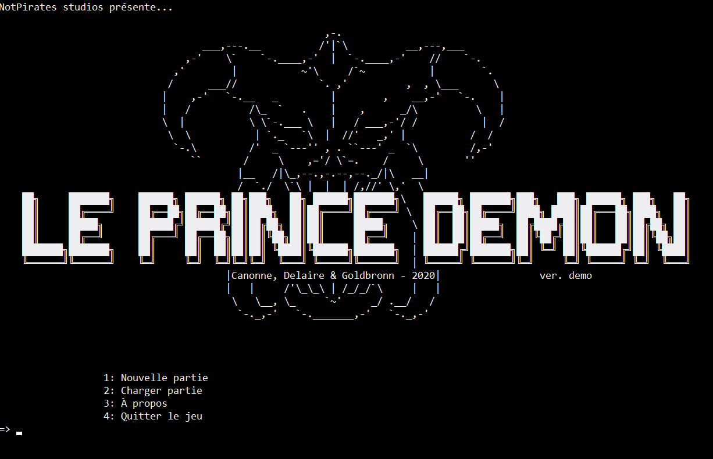
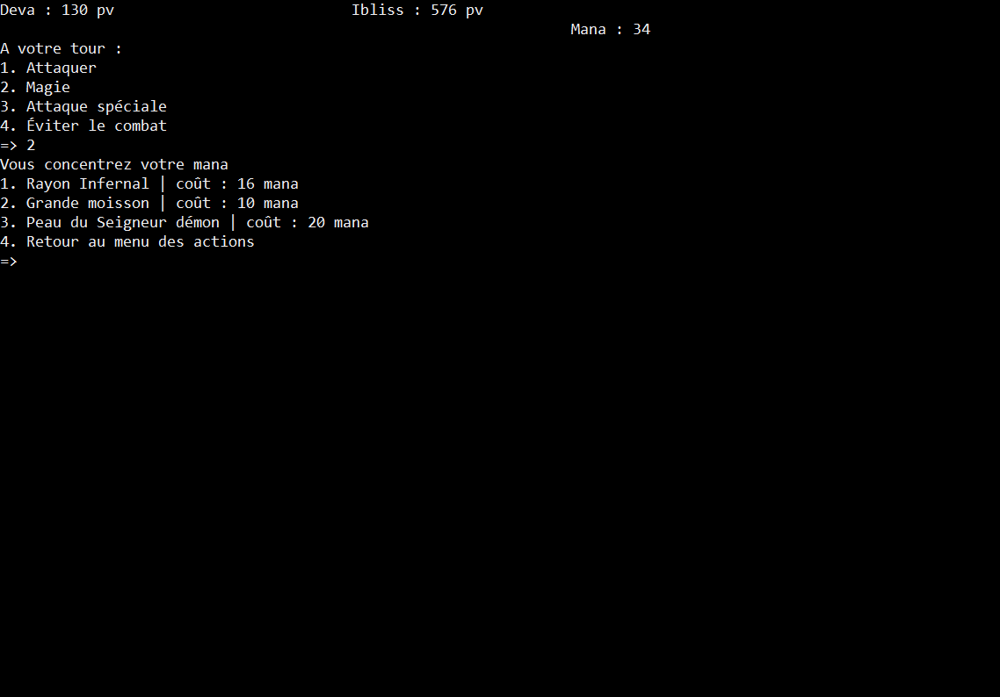
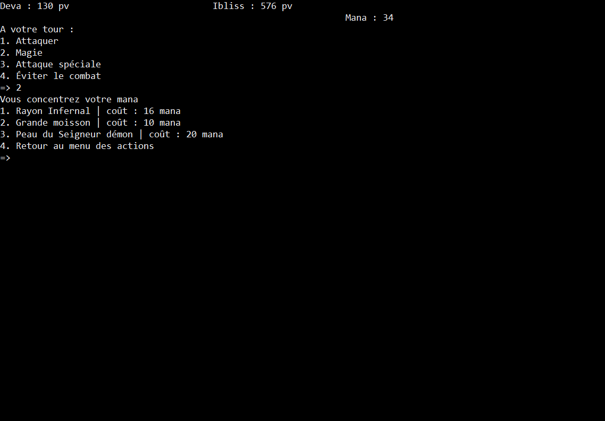
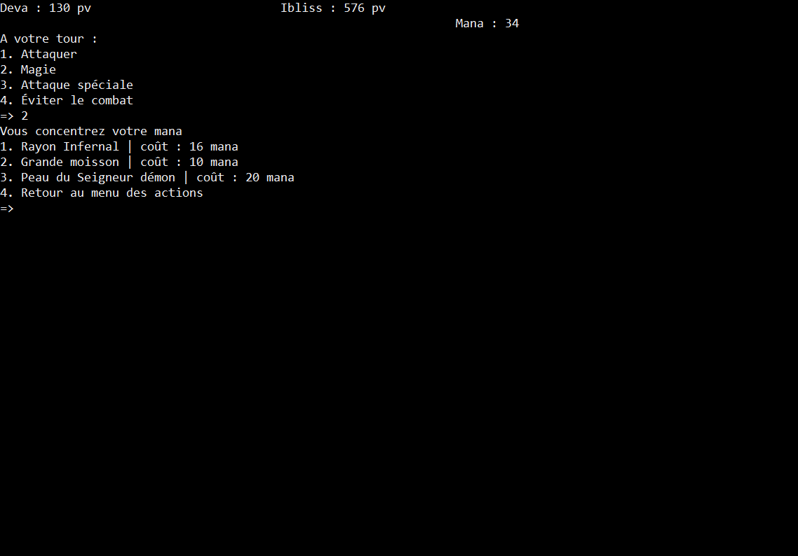

Janvier 2021
Le Prince Démon (démo)
Le prince démon est un jeu textuel crée en collaboration avec Gabriel Goldbronn (chargé de toutes les données du jeu) et Argan Delaire (lore et worldbuilding) dans le cadre d'un projet Python à HETIC.
C'est un jeu entièrement réalisé en python avec comme seul usage de bibliothèque une gestion du son grâce à Pygame.
Le jeu vous transporte dans le monde de Ljosalfer où vous jouez d'une part le prince démon pour le tutoriel et d'une autre son père, le dieu roi.
C'est un RPG scripté au tour par tour incluant des mécaniques de magie et de coups spéciaux modifiant les caractéristiques de l'ennemi.
Dans ce projet j'ai entièrement réalisé le système de combat, l'ergonomie, la narration et le visuel. Les musiques ne m'appartiennent pas, elle sont d’ailleurs toutes créditées.
Le jeu vous transporte dans le monde de Ljosalfer où vous jouez d'une part le prince démon pour le tutoriel et d'une autre son père, le dieu roi.
C'est un RPG scripté au tour par tour incluant des mécaniques de magie et de coups spéciaux modifiant les caractéristiques de l'ennemi.
Dans ce projet j'ai entièrement réalisé le système de combat, l'ergonomie, la narration et le visuel. Les musiques ne m'appartiennent pas, elle sont d’ailleurs toutes créditées.
Hetic Mini Games est un site de divertissement crée en deux semaines dans le cadre d'un projet intensif front-end à HETIC.
Ce site a été réalisé en collaboration avec Amin Bentani, Julie Cesana, Gabriel Goldbronn, Thomas Latour et Amira Rechid.
C'est un site contenant quatre jeux développés en javascript natif et s'inspirant de la direction artistique de l'école. On y a intégré un système de monnaie gagnable en jouant, servant à acheter des avatars.
Durant ces deux semaines, j'ai joué le rôle de chef de projet, coordinant toute l'équipe pour atteindre nos objectifs en peu de temps. J'ai aussi réalisé deux jeux : Le Pixel-drawer et le Puissance4.
Concernant le site en lui-même, j'ai écrit une grande partie du code HTML / CSS du site et coordiné l'équipe correspondante.
Ce site a été réalisé en collaboration avec Amin Bentani, Julie Cesana, Gabriel Goldbronn, Thomas Latour et Amira Rechid.
C'est un site contenant quatre jeux développés en javascript natif et s'inspirant de la direction artistique de l'école. On y a intégré un système de monnaie gagnable en jouant, servant à acheter des avatars.
Durant ces deux semaines, j'ai joué le rôle de chef de projet, coordinant toute l'équipe pour atteindre nos objectifs en peu de temps. J'ai aussi réalisé deux jeux : Le Pixel-drawer et le Puissance4.
Concernant le site en lui-même, j'ai écrit une grande partie du code HTML / CSS du site et coordiné l'équipe correspondante.
Citypop Discovery est mon second projet entièrement réalisé en solo après ce site.
Il est né d'une volonté de rendre hommage à un genre musical m'ayant accompagné pendant des années et ayant influencés mes goûts et mon imaginaire.
Développé intégralement en HTML / CSS / JS, et conçu à la base comme un projet 100% personnel, j'ai pu y greffer par la suite la page merch (factice) pour un projet d'étude.
Parcourez l'histoire de la City pop, en passant par sa mort puis sa renaissance dans les années 2010.
La page Playlists vous permet de directement découvrir le genre à travers deux excellentes playlists.
L'entièreté du site est en anglais, par simple volonté de diversité.
Il est né d'une volonté de rendre hommage à un genre musical m'ayant accompagné pendant des années et ayant influencés mes goûts et mon imaginaire.
Développé intégralement en HTML / CSS / JS, et conçu à la base comme un projet 100% personnel, j'ai pu y greffer par la suite la page merch (factice) pour un projet d'étude.
Parcourez l'histoire de la City pop, en passant par sa mort puis sa renaissance dans les années 2010.
La page Playlists vous permet de directement découvrir le genre à travers deux excellentes playlists.
L'entièreté du site est en anglais, par simple volonté de diversité.
Everbright's contender est un jeu de joute verbale et de cartes à 2 joueurs en Local.
Prenant place dans le monde de Ljosalfer (comme le prince démon), dans la ville d'Everbright, des heros s'affrontent par le verbe et la prose pour gagner de l'influence.
En plus du choix des mots, le joueur peut se servir de cartes pour désavantager l'adversaire ou s'octroyer des bonus et privilèges.
Ce jeu entièrement développé en python à été développé et conçu en collaboration avec Amin Bentani et Gabriel Goldbronn au développement ainsi que Argan Delaire à la réalisation du monde, des héros et du choix des mots.
Pour ma part, je me suis chargé de la gestion du projet, de la Direction artistique, de la conception graphique, du design et du gameplay.
Le jeu dispose d'une interface graphique entièrement réalisée sur pygame.
Prenant place dans le monde de Ljosalfer (comme le prince démon), dans la ville d'Everbright, des heros s'affrontent par le verbe et la prose pour gagner de l'influence.
En plus du choix des mots, le joueur peut se servir de cartes pour désavantager l'adversaire ou s'octroyer des bonus et privilèges.
Ce jeu entièrement développé en python à été développé et conçu en collaboration avec Amin Bentani et Gabriel Goldbronn au développement ainsi que Argan Delaire à la réalisation du monde, des héros et du choix des mots.
Pour ma part, je me suis chargé de la gestion du projet, de la Direction artistique, de la conception graphique, du design et du gameplay.
Le jeu dispose d'une interface graphique entièrement réalisée sur pygame.

 

